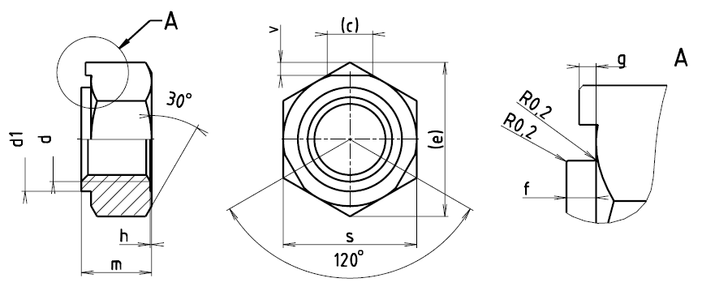

Příklad označení šestihranné matice pro přivaření se závitem M10:
PŘIVAŘOVACÍ MATICE ČSN 02 1455–M10
| Závit d | M4 | M5 | M6 | M74) | M8 | M10 | M12 | M14 | M16 |
|---|---|---|---|---|---|---|---|---|---|
| c | 4,5 | 4,5 | 5 | 5,5 | 6,5 | 7 | 7,5 | 8 | 8,5 |
| d1 | 7 | 7 | 8 | 9 | 10 | 13 | 14 | 16 | 18 |
| emin. | 11 | 11 | 13,2 | 14,3 | 15,5 | 18,9 | 21 | 24,4 | 26,7 |
| f+0,10 -0,15 |
0,8 | 0,8 | 0,9 | 1 | 1 | 1,2 | 1,4 | 1,8 | 1,8 |
| h | 0,4 | 0,4 | 0,5 | 0,5 | 0,5 | 0,5 | 0,5 | 0,6 | 0,6 |
| g1) | 0,4 | 0,4 | 0,5 | 0,55 | 0,55 | 0,6 | 0,8 | 1 | 1 |
| m | 5,5 | 5,5 | 6 | 6 | 7 | 8,5 | 10 | 12 | 14 |
| s | 10 | 10 | 12 | 13 | 14 | 17 | 19 | 22 | 24 |
| v+0,5 -0,1 |
1,3 | 1,3 | 1,4 | 1,5 | 1,8 | 2 | 2,1 | 2,3 | 2,4 |
| Hmotnost [g] | 2,9 | 2,8 | 4,2 | 4,8 | 6,3 | 11,3 | 15,5 | 24,9 | 33,3 |